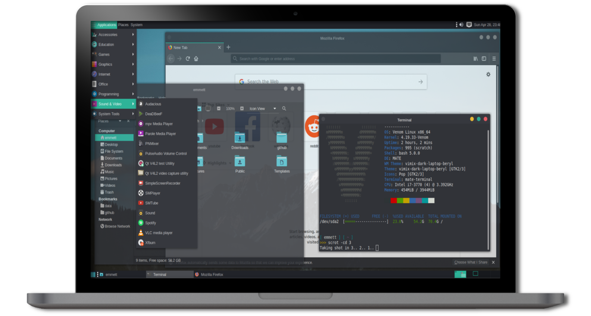

What's Venom Linux
Venom Linux is a source based linux distribution originally built on top of LFS (Linux From Scratch) guide then independently grows make it usable for daily use. This distro is inspired by CRUX of its simplicity and KISS philosophy.

This distro is use BSD-style initscripts and BSD-like ports system for packages. Packages is managed by its own package manager called scratchpkg that has dependencies checking and its full written in bash.